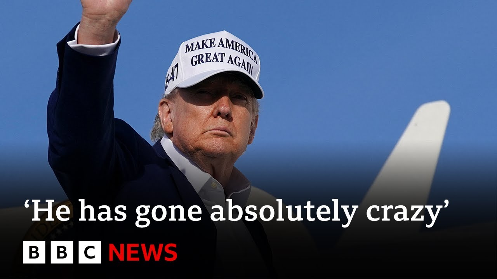

【特朗普总统表示对俄罗斯持续轰炸乌克兰城市感到愤怒，并考虑实施进一步制裁。】
Summary: 特朗普总统对俄罗斯持续轰炸乌克兰城市表示愤怒，并考虑实施更多制裁。
摘要： President Trump says he's furious at Russia's continued bombardment of Ukrainian cities and is considering imposing further sanctions.

⏱️ Estimated Reading Time: 9 min
President Trump says he's furious at Russia's continued bombardment of Ukrainian cities and is considering imposing further sanctions.
特朗普总统表示，他对俄罗斯持续轰炸乌克兰城市感到愤怒，并考虑实施进一步制裁。
Responding to questions from the media on Sunday night, Mr. Trump said successive nights of deadly air strikes had come in the middle of talks and he was not happy.
周日晚上，特朗普在回答媒体提问时表示，连续几夜的致命空袭发生在谈判期间，他对此感到不满。
He was also critical of President Zilinski.
他还批评了泽连斯基总统。
Russia mounted its biggest, heaviest aerial bombardment of the war so far on Sunday with at least a dozen people killed.
俄罗斯在周日发动了战争以来规模最大、最猛烈的空袭，造成至少12人死亡。
Aruna Younger has the latest.
阿鲁纳·杨格带来最新报道。
President Trump arriving in New Jersey last night seemed to have lost patience with the Russian president.
昨晚抵达新泽西的特朗普总统似乎对俄罗斯总统失去了耐心。
Yeah, I'll give you an update.
是的，我来给你们更新一下情况。
I'm not happy with what Putin's doing.
我对普京的所作所为感到不满。
He's killing a lot of people and I don't know what the hell happened to Putin.
他杀害了许多人，我不知道普京到底怎么了。
I've known him a long time.
我认识他很久了。
Always gotten along with him, but he's sending rockets into cities and killing people and I don't like it at all.
我们一直相处得很好，但他现在向城市发射火箭弹，杀害平民，我对此非常不满。
Okay, we're in the middle of talking and he's shooting rockets into Kiev and other cities.
好吧，我们正在谈判，他却向基辅和其他城市发射火箭弹。
I don't like it at all.
我对此非常不满。
Despite US-led efforts to secure a ceasefire, Russia has ramped up its attacks on Ukraine.
尽管美国主导了停火努力，俄罗斯仍加强了对乌克兰的袭击。
Hundreds of drones and dozens of missiles were launched on Kev and 30 other Ukrainian cities over the weekend in the largest attack since the war began 3 years ago.
上周末，数百架无人机和数十枚导弹袭击了基辅及乌克兰其他30座城市，这是三年来最大规模的袭击。
According to Ukrainian officials, 12 people died, including three children from one family killed in the northwest region.
乌克兰官员称，12人死亡，其中包括西北地区一个家庭的三名儿童。
Stannislav aged eight, Tamara 12, and Roman 17.
8岁的斯坦尼斯拉夫、12岁的塔玛拉和17岁的罗曼。
It's led Ukraine's President Zilinski to call for stronger condemnation from Washington.
这促使乌克兰总统泽连斯基呼吁华盛顿予以更强烈的谴责。
He said on social media, "Russia is dragging out this war and continues to kill every day."
他在社交媒体上表示：“俄罗斯正在延长这场战争，每天都在杀人。”
He continued, "This cannot be ignored. Silence of America, silence of others around the world only encourages Putin."
他补充道：“这不能被忽视。美国的沉默、世界其他国家的沉默只会鼓励普京。”
Speaking yesterday, the US president reiterated that sanctions were still a possibility.
美国总统昨日重申，制裁仍有可能实施。
You've talked before about putting more sanctions on Russia.
你之前提到过对俄罗斯实施更多制裁。
Is that something you're considering more true?
这是你正在考虑的吗？
Absolutely.
当然。
He's killing a lot of people.
他杀害了许多人。
I don't know what's wrong with him.
我不知道他怎么了。
There's pressure on the president to act.
总统面临采取行动的压力。
The US Senate is planning to approve a massive sanctions package on Moscow, which could impose 500% tariffs on Russia's allies.
美国参议院计划批准一项针对莫斯科的大规模制裁方案，可能对俄罗斯盟友征收500%的关税。
It has support from Republicans and Democrats.
该方案得到了共和党和民主党的支持。
But last night, the US president also had strong words for President Zalinski, saying that he was doing his country no favors by talking the way he does.
但昨晚，美国总统也对泽连斯基总统发表了严厉言论，称他的言论对国家无益。
He added, "Everything out of his mouth causes problems. I don't like it and it better stop."
他补充道：“他说的每一句话都在制造问题。我不喜欢这样，最好停止。”
The worsening situation on the ground comes even as Kev and Moscow completed their biggest prisoner exchange since the start of the war.
尽管基辅和莫斯科完成了战争以来最大规模的战俘交换，地面局势仍在恶化。
Ukrainian prisoners arrived home yesterday.
乌克兰战俘昨日回国。
Similar scenes in Russia.
俄罗斯也出现了类似场景。
A thousand soldiers on each side have been swapped over the past three days.
过去三天，双方各交换了1000名士兵。
But those scenes of joy are yet to be witnessed across Ukraine cities where the bombardment continues.
但在持续遭受轰炸的乌克兰城市，这些欢乐场景尚未出现。
Aruna, BBC News.
阿鲁纳，BBC新闻。
Our correspondent James Waterhouse is in Kev.
我们的记者詹姆斯·沃特豪斯在基辅。
He told us more about the reaction to the latest comments from Donald Trump.
他向我们详细介绍了对特朗普最新言论的反应。
I think President Zalinsky wanted a response frankly uh after aerial bombardments we hadn't really seen before in terms of their scale.
我认为泽连斯基总统坦率地希望得到回应，因为这次空袭的规模前所未见。
And what's interesting is how they are intensifying and they have intensified since Donald Trump returned to office.
有趣的是，自特朗普重返政坛以来，袭击正在加剧。
And yet the US president described his surprise uh as to how why how or why Vladimir Putin was launching rockets in his words at Ukrainian cities.
然而，美国总统表示惊讶，不明白普京为何向乌克兰城市发射火箭弹。
What Ukraine wants is for America to follow through on its threat of further sanctions for Russia.
乌克兰希望美国兑现对俄罗斯实施进一步制裁的威胁。
Uh and crucially, we heard Mr. Trump do so for a second time, but he's done it in the past and that has not been followed up with action.
关键的是，我们听到特朗普再次表态，但他过去也曾如此，却未采取实际行动。
It's usually followed up with continued efforts at ceasefire talk, some warm language between Washington uh and Moscow.
通常，这之后是继续推动停火谈判，华盛顿和莫斯科之间的一些温和言辞。
But, you know, President Zilinski didn't hold back over the weekend.
但泽连斯基总统在周末并未克制。
He said American silence uh only encourages Russia.
他表示，美国的沉默只会鼓励俄罗斯。
He said, you know, the world can have a day off, whereas we're, you know, we're stuck here still fighting this war and still having hundreds of drones and missiles land on our cities.
他说，世界可以休息一天，而我们却仍在这里战斗，仍有数百架无人机和导弹袭击我们的城市。
It's been a very difficult weekend for Kiev and dozens of other towns and cities across Ukraine.
对基辅和乌克兰其他数十个城镇来说，这是一个非常艰难的周末。
The air defenses were once again going last night with air raid sirens uh as Russia continues to try and terrorize populations with these deliberate strategies.
昨晚，防空警报再次响起，俄罗斯继续试图通过这些蓄意策略恐吓民众。
uh but also slowly yes but they also are advancing in the east um in a war that is not going Ukraine's way and there had been a pledge hadn't there recently from for tougher sanctions from eur European leaders against Russia where has that got to where the European leaders notably Germany's chancellor Friedrich Mets is is is saying that there there are further packages down the line there could be aimed at those in Vladimir Putin's uh inner circle I mean the European Union really has slapped a a fair amount of penalties on Russia.
但与此同时，俄罗斯也在东部缓慢推进，这场战争对乌克兰不利。最近，欧洲领导人曾承诺对俄罗斯实施更严厉的制裁，尤其是德国总理弗里德里希·梅茨表示，未来可能会有针对普京核心圈子的进一步制裁方案。欧盟已经对俄罗斯实施了相当多的惩罚。
It was once one of its biggest trading partners before the full scale uh invasion.
在全面入侵之前，俄罗斯曾是欧盟最大的贸易伙伴之一。
So it's difficult to see what uh further effect could be gained for the West in in in Europe tried to add further penalties but they are and they will be welcomed here in Ukraine.
因此，很难看出欧洲进一步制裁还能产生什么效果，但这些制裁在乌克兰会受到欢迎。
But what KE really wants is America to follow suit by targeting countries that buy Russian gas by slapping 500% tariffs on.
但基辅真正希望的是美国效仿，对购买俄罗斯天然气的国家征收500%的关税。
That was one of the proposals floating around in the uh US Congress because the belief here is that Russia's war machine is not being strangled enough.
这是美国国会讨论的提案之一，因为乌克兰认为俄罗斯的战争机器尚未被足够扼制。
It is still able to mount these air strikes.
它仍能发动这些空袭。
It is still able to launch advances uh along the front lines.
它仍能沿前线推进。
You wouldn't know it by the weather today, but with with the summer conditions, that is when uh this time Russian forces will hope to make gains with armored vehicles and troops moving over harder ground.
从今天的天气看不出来，但随着夏季到来，俄罗斯军队希望利用装甲车和部队在更坚硬的地面上取得进展。
But, you know, with drone the drone warfare we're continuing to see, these are front lines that that really have become static in recent.
但无人机战争仍在继续，这些前线最近实际上已经停滞。